Buttons & Icons
Every button and icon in the app, with a picture of it and what it does. Each line starts with the icon, then its name, then what it does.
- The playback bar
- The score toolbar
- The library
- The editor toolbar
- The editing modes
- The editing window: window buttons
- The editing window: notes
- The editing window: bars
- Staves in the inspector
The playback bar
Go to Beginning: jumps back to the start of the score.
Previous Bar: moves back one bar.
Play: starts the music and the page follows along. It becomes a Pause button while playing.
Next Bar: moves forward one bar.
Metronome: switches the click on or off.
Key: opens the key menu for a backing track or karaoke file, to move the music up or down in semitones.Down a Tone: in the key menu, lowers the music by two semitones.
Up a Tone: in the key menu, raises the music by two semitones.
The score toolbar
Edit Score: opens the score editor.
Annotate: draw on the page with Apple Pencil.
Wait for Me: the music waits until it hears you play the next note.
Record Myself: records you with the microphone so you can review the take.
Tuner: tells you how far in tune the note you play is.
Inspector: opens the panel with this score's settings: key, tempo, backing tracks, staves and appearance.
Chord View: shows the chords of the score as a grid.
Show Lyrics Instead of Music: swaps the page for the words.
Play Together: plays in time with other devices.
Zoom In: makes the music bigger.
Zoom Out: makes the music smaller.
Fit to Width: sizes the page to fill the screen width.Follow Playback: scrolls the page to keep the playing bar in view.
Dark Sheet Music: shows light notes on a dark page.
Turn Pages Like a Book: pages turn with a curl instead of scrolling.
Highlight Notes: lights up each note as it sounds.
Highlight Bar: washes the playing bar with colour.
Moving Line: draws a line that travels along the music.More: the rest of the commands for this score.
The library
Settings: appearance, playing, listening, accessibility and shortcuts.
Help: opens this guide.
Add: add a score, a set-list or a file.
Import Score: brings a PDF, MusicXML or other score into the library.
Scan Sheet Music: photographs a printed page and reads it.
New Blank Score: starts an empty score to write in.
Search Scores: finds classical pieces and jazz tunes to download.
Scales & Arpeggios: makes a practice score for a scale or arpeggio in any key.New Set-List: makes a list of scores to play in order.
Tracks from GitHub: downloads scores and tracks from a GitHub repository.
Print: prints the score.
Export as PDF: saves the page as a PDF.
Export as MusicXML: saves the notes as a MusicXML file.
Export Video: makes a movie of the music following along.
Rename: changes the score's name.
Duplicate: makes a copy of the score.
Delete from Library: removes the score.
The editor toolbar
Listen: plays the music from the chosen note or bar. It becomes a Stop button while playing.
Help: opens this guide at the editor pages.
Undo: takes back the last change.
Redo: puts back a change you undid.
Options: the sound used for listening, beats per bar, editing with the Pencil only, history and more.
History: saved versions and branches of the score.
Deselect: clears whatever is chosen. It shows in the middle of the toolbar while something is chosen.
The editing modes
Notes: put in and move notes, and set how long they last.
Rests: add, change and remove rests.
Marks: accidentals, ties and articulations.
Dynamics: loud and soft, crescendo and diminuendo.
Bars: repeat signs, and adding or removing bars.
 Form: first and second time bars, jumps and tempo.
Form: first and second time bars, jumps and tempo.
Medley: copy, cut, paste and insert bars, even from other scores.
Erase: rub out notes and rests.
Draw: write over the music with Apple Pencil.
The editing window: window buttons
Close: the red button closes the editing window.
Minimise: the yellow button shrinks the window to its title bar. Double-tap the title bar to bring it back.
Fit to Contents: the green button sizes the window to show everything in it.
Back: goes back from a submenu to the list.
The editing window: notes
Sharp: puts a sharp on the chosen notes.
Flat: puts a flat on the chosen notes.
Natural: puts a natural on the chosen notes.
Tie to the Next Note: joins a note to the next one of the same pitch.
Dotted: makes the note half as long again.
Copy Notes: copies the chosen notes.
Cut Notes: copies the chosen notes and removes them.
Paste Notes: opens a choice. Overwrite writes the copied notes over the ones already there and removes them. Insert puts them into new bars after this one.
Duplicate Notes: opens a choice: Inline puts the copy straight after, On Stave Below or To Stave Above puts it on the next staff, and To New Stave makes a new staff for it.
Turn into a Rest: replaces the chosen notes with a rest. For a rest, it takes the rest off the page.
Half as Long: halves the length of the chosen notes.
Twice as Long: doubles the length of the chosen notes.
Pitch: three rows of buttons to move the chosen notes up or down by a Half Step, a Full Step or an Octave.Up: raises the notes by the step named in its row.
Down: lowers the notes by the step named in its row.Up an Octave: raises the notes by an octave.
Down an Octave: lowers the notes by an octave.Generate Harmony: writes a harmony a third, fourth, fifth, sixth or octave above or below on an empty staff, or a new one.
Select All Notes: chooses every note in the piece.
Select All Notes on Staff: chooses every note on one staff.Select All Bars: chooses every bar, so bar actions apply to all of them.
Articulation: staccato, accent, tenuto, marcato, fermata and more.
Dynamic: sets a dynamic at the note, from ppp to fff.
Follow the Key Signature: takes off a note's own accidental so the key signature decides.
Bar: opens the settings for the note's bar in a second window.
The editing window: bars
Copy Bar: copies the chosen bars.
Cut Bar: copies the chosen bars and removes them.
Paste Bars: opens a choice. Overwrite replaces the chosen bars with the copied ones. Insert puts the copied bars in after the chosen ones.
Duplicate: opens a choice of Inline, On Stave Below, To Stave Above or To New Stave.
Delete Bar: removes the chosen bars. The last bar of a piece always stays.
Repeat start: puts a repeat sign at the start of the bar.Repeat end: puts a repeat sign at the end of the bar, and cycles through the number of times.
Add a bar after: adds an empty bar after this one.
Add Bar After: adds an empty bar after the chosen bar.
Add Bar Before: adds an empty bar before the chosen bar.
Select Content: chooses all the notes in the chosen bars.
Crescendo and Diminuendo: puts a hairpin over the bar.
Longer: stretches a hairpin or bracket over more bars.
Shorter: shortens a hairpin or bracket.
First and Second Time Bars: first time, second time and bracket length.
 Jumps and Signs: Segno, Coda, To Coda, D.C., D.S. and Fine.
Jumps and Signs: Segno, Coda, To Coda, D.C., D.S. and Fine.
Insert from Score: takes bars from another score in your library.
Expand Repeats: writes the piece out as it is played.All Staves: actions that take the bar from every staff at once.
Add Treble Staff: adds a staff with a treble clef.
Add Bass Staff: adds a staff with a bass clef.
Delete Staff: removes one staff and its notes, leaving the others.
Staves in the inspector
Mute: silences a staff while the music plays.
Solo: plays only the staves marked Solo.
Hide Staff: takes a staff off the page. It stays off in exported and printed PDFs, so you can print one part.
Show Staff: puts a hidden staff back.